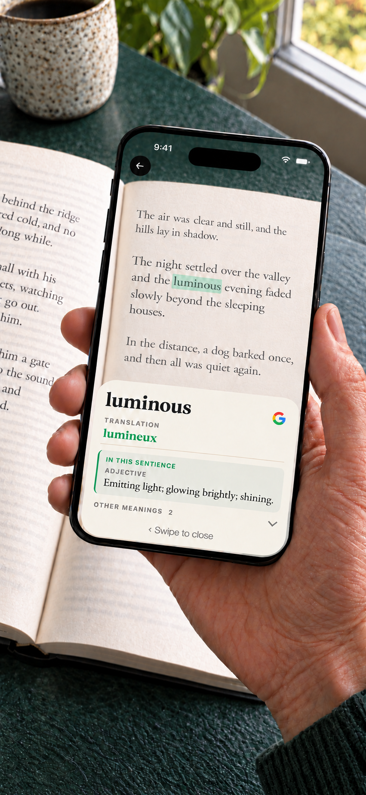

How do you look up a word while reading a paper book?
To look up a word in a paper book, you can type it into a dictionary, use a paper dictionary, or point a camera dictionary at the printed word. Camera lookup saves the typing step; a typed search is useful when the page is difficult to photograph.
Booktionary is an iPhone camera dictionary for this single-word task. Point the centre ring at a word, read its definition, then dismiss the panel and return to your sentence. You keep reading the physical book.
Choose the language of the book before scanning. English definitions are built in; the other 23 book dictionaries are optional downloads included in the purchase. A book dictionary and a translation pack serve different purposes: the dictionary defines the word, while a translation pack adds equivalents for words in English books.
Recognition depends on the print and lighting. If the wrong word appears, move closer, reduce glare and centre the ring again. Dictionary coverage varies; not every name, spelling or conjugated form has an entry. A printed dictionary or typed search remains useful when camera lookup cannot find the word.
Try a word from your book
- Choose the book language. Download its dictionary if needed.
- Tap Start reading and allow camera access.
- In good light, hold the centre ring over the printed word for about a second.
- Read the definition. Swipe the panel away to return to the camera and your book.

See the app, all supported languages and download requirements.